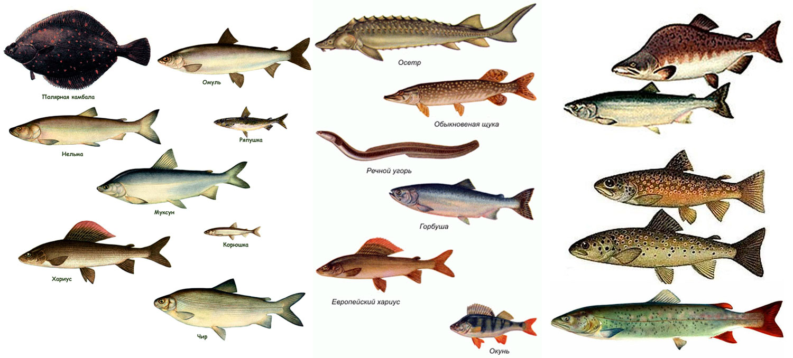

Ловля рыбы! - захватывающее занятие, предоставляющее уникальные возможности.
Благодаря использованию лодки можно достичь мест, недоступных с берега,
и поймать рыбу на глубокой воде.
Дополнительным преимуществом является быстрая возможность изменить место
ловли в случае отсутствия клева Ловля рыбы с лодки - захватывающее занятие,
предоставляющее уникальные возможности. Благодаря использованию лодки можно достичь мест,
недоступных с берега, и поймать рыбу на глубокой воде.
Дополнительным преимуществом является быстрая возможность изменить
место ловли в случае отсутствия клева

Речная рыба